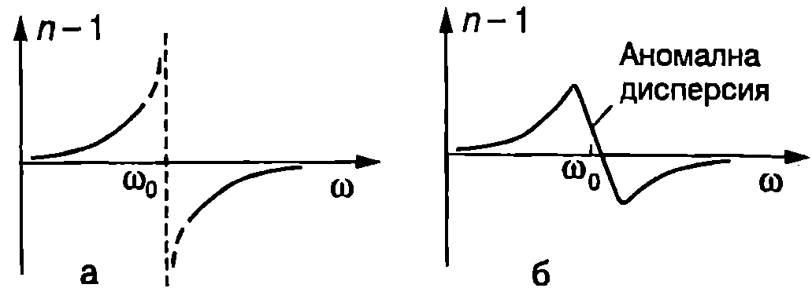

Зависимостта на показателя на пречупване $n$ от кръговата честота $\omega$ (или от дължината на вълната $\lambda$) се нарича дисперсия на светлината. Електричните заряди от материалната среда, след като попаднат в променливото електромагнитно поле на светлинната вълна, извършват принудени трептения и сами излъчват ЕМ вълни. Резултантната вълна във веществото е суперпозиция от падащата ЕМ вълна и от вторичните вълни, които се излъчват от всички трептящи заряди. В класическата електронна теория за дисперсията на светлината се доказва, че показателят на пречупване и за среди, в които поглъщането на светлината е слабо, се определя от диелектричната проницаемост $\varepsilon$ на средата: $$n = \sqrt{\varepsilon}. $$ Ще припомним, че диелектричната проницаемост $\varepsilon$ характеризира поляризацията на диелектриците, т.е. отместването на заредените частици в атомите и молекулите под действие на външно електрично поле. В~\ref{sec:51} разгледахме поляризацията на диелектриците в постоянни (статични) електрични полета. Диелектричната проницаемост на средата в този случай се нарича статична диелектрична проницаемост. Поляризацията на диелектриците под действие на високочестотното електромагнитно поле на светлинната вълна се различава от статичния случай и се описва от диелектрична проницаемост, която зависи от честотата. В най-простия класически модел електроните от средата се разглеждат като осцилатори със собствена кръгова честота на трептене $\omega_0$, които извършват принудени трептения с кръгова честота $\omega$, равна на кръговата честота на падащата ЕМ вълна. Както е известно (вж. \ref{sec:74}), амплитудата на принудените трептения рязко нараства при $\omega\approx\omega_0$ (резонанс). Следователно при честоти на ЕМ вълна, близки до собствените честоти на трептене на електроните, трябва да се очаква силна честотна зависимост на диелектричната проницаемост, както и ефективно поглъщане на електромагнитна енергия от средата. Когато $\omega$ значително се различава от $\omega_0$, поглъщането на светлината може да се пренебрегне. Тогава от електронната теория се получава следната зависимост на показателя на пречупване $n$ от кръговата честота $\omega$: $$n(\omega)= \sqrt{\varepsilon(\omega)} \approx 1+ \frac{N e^2}{2m\varepsilon_0} \frac{1}{\omega_0^2 - \omega^2} , $$ където $N$ е броят на осцилаторите в единица обем, $m$ и $e$ са масата и зарядът на електрона, а $\varepsilon_0$ е електричната константа. Графиката на зависимостта на $n(\omega) - 1$ от $\omega$ е показана на Фиг. \ref{fig:88.1}.

`Фиг. 88.1`
Електроните в атомите могат да се разделят на външни оптични електрони, и вътрешни електрони. Електроните от вътрешните електронни обвивки имат много високи собствени честоти на трептене, поради което електромагнитните вълни от оптичния диапазон на спектъра практически не им влияят. За редица вещества собствените честоти $\omega_0$ на външните (валентни) електрони са в далечната ултравиолетова област на спектъра. Затова в цялата видима част на спектъра е в сила неравенството $\omega \ll \omega_0$ и съгласно с уравнение \eqref{eq:88.2} показателят на пречупване $n$ е по-голям от единица и нараства при увеличаване на кръговата честота $\omega$. Такъв характер на зависимостта $n(\omega)$ се нарича нормална дисперсия. Всички прозрачни вещества имат нормална дисперсия във видимата област. Техният показател на пречупване нараства при увеличаване на кръговата честота $\omega$ (при намаляване на дължината на вълната $\lambda$). На Фиг. \ref{fig:88.2} е показана зависимостта на показателя на пречупване $n$ от дължината на вълната $\lambda$ във видимата и близката ултравиолетова област за топен кварц. Вижда се, че кварцът има нормална дисперсия: показателят на пречупване намалява при увеличаване на дължината на вълната.

Дисперсия на показателя на пречупване на топен кварц.
`Фиг. 88.2`
След като се отчете поглъщането при $\omega\approx\omega_0$, прекъснатата дисперсионна крива от Фиг. \ref{fig:88.1}а преминава в непрекъсната крива с падащ участък в областта на силното поглъщане (Фиг. \ref{fig:88.1}б). В тази област се наблюдава аномална дисперсия — показателят на пречупване намалява при увеличаване на кръговата честота.
Разлагане на светлината от призма
За пространствено разделяне на лъчите с различна дължина на вълната в редица спектрални апарати се използват призми, изработени от различни материали. На Фиг. \ref{fig:88.3}а е показан ходът на светлинен лъч през призма. Ъгълът $\gamma$ се нарича пречупващ ъгъл на призмата. Ъгълът $\delta$, на който се отклонява лъчът спрямо първоначалната си посока на разпространение след преминаване през призмата, се нарича ъгъл на девиация. Доказва се, че ъгълът на девиация е минимален при симетричен ход на лъчите вътре в призмата (Фиг. \ref{fig:88.3}а). Ъгълът на минимална девиация $\delta$ зависи от пречупващия ъгъл $\gamma$ и от показателя на пречупване $n$ на материала, от който е направена призмата. За призма с малък пречупващ ъгъл $$\delta \approx (n-1)\gamma. $$

`Фиг. 88.3`
Когато върху призмата попада сноп от бяла светлина, лъчите се разделят пространствено от призмата. Показателят на пречупване на призмата е най-малък за червената светлина, която е с най-голяма дължина на вълната. Затова нейните лъчи се пречупват най-слабо, т.е. техният ъгъл на девиация е най-малък. Най-голям е показател на пречупване на призмата за виолетовите лъчи и те най-силно се пречупват имат най-голям ъгъл на девиация. Ако поставим екран зад призмата, върху него ще се получи спектър на светлината, съдържащ всички цветове от дъгата. (Фиг. \ref{fig:88.3}б). Такива спектри се наричат дисперсионни, защото за пространственото разделяне на светлинните вълни с различна дължина на вълната се използва явлението дисперсия на светлината. За разлагане на светлината от видимата и близката ултравиолетова област обикновено се използват кварцови призми. Кварцът и различните стъкла не са прозрачни в инфрачервената област, затова инфрачервените спектрометри използват призми от йонните кристали NaCI, KBr и други, които не поглъщат инфрачервените лъчи. (Например КВг е прозрачен за лъчение с дължина на вълната до 25 $\mu$m.)
Цветно зрение
Човешкото око е чувствително и възприема като светлина само много малка част от спектъра на електромагнитните вълни. Дължината на вълната (във вакуум) на видимата светлина лежи в интервала от 400 nm до 750 nm. Цветното зрение е възможно благодарение на рецепторните клетки в ретината на окото, съдържащи фоточувствителни молекули. Съществуват три вида рецепторни клетки, които поглъщат предимно синята, зелената или червената светлина. Всеки спектрален цвят може да се получи чрез подходяща комбинация от основните цветове: син, зелен и червен. Например зрително възприятие за жълт цвят се създава, когато зелените и червените рецептори поглъщат еднакво светлина, а сините почти не поглъщат. Въздействието върху рецепторите на попадналата в окото монохроматична жълта светлина или смес от зелена и червена светлина е едно и също. И в двата случая окото възприема светлината като жълта.